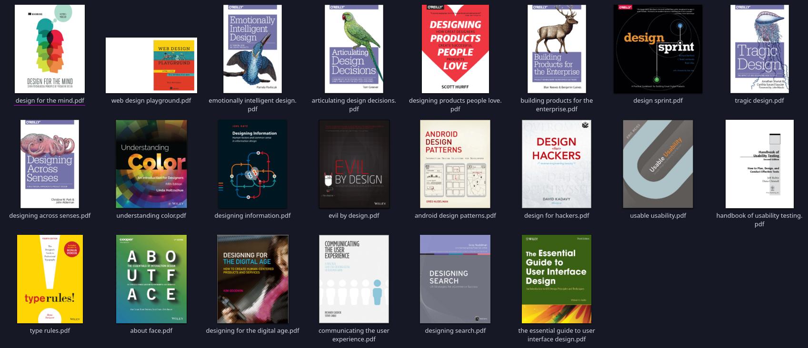
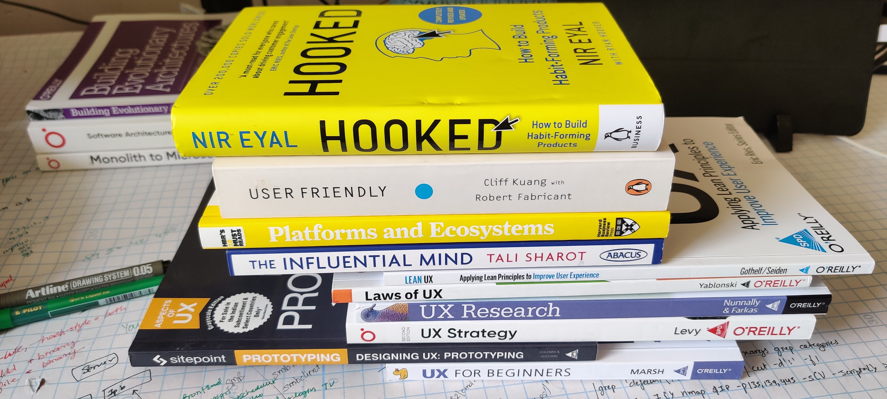

/f0c1s/blog/articles/
100 days of UX
Attempt to read and soak up as much information as possible in 100 days.
The amount of books I have,
digital books
- about face.pdf
- android design patterns.pdf
- articulating design decisions.pdf
- building products for the enterprise.pdf
- communicating the user experience.pdf
- design for hackers.pdf
- design for the mind.pdf
- designing across senses.pdf
- designing for the digital age.pdf
- designing information.pdf
- designing products people love.pdf
- designing search.pdf
- design sprint.pdf
- emotionally intelligent design.pdf
- evil by design.pdf
- handbook of usability testing.pdf
- the essential guide to user interface design.pdf
- tragic design.pdf
- type rules.pdf
- understanding color.pdf
- usable usability.pdf
- web design playground.pdf
0.digital-ux-books
hard copies
- User friendly
- Hooked
- On platforms and ecosystems
- The influential mind
- Laws of UX
- Lean UX
- UX for beginners
- UX strategy
- Designing UX: Prototyping
- UX research
1.hard copies on UX
Smashing Magazine and A book apart
I have a lot of books from these two, will see if that helps me on my journey or not.
Day 0
- Setup this doc
- Read a few pages of UX for beginners.
Day 1